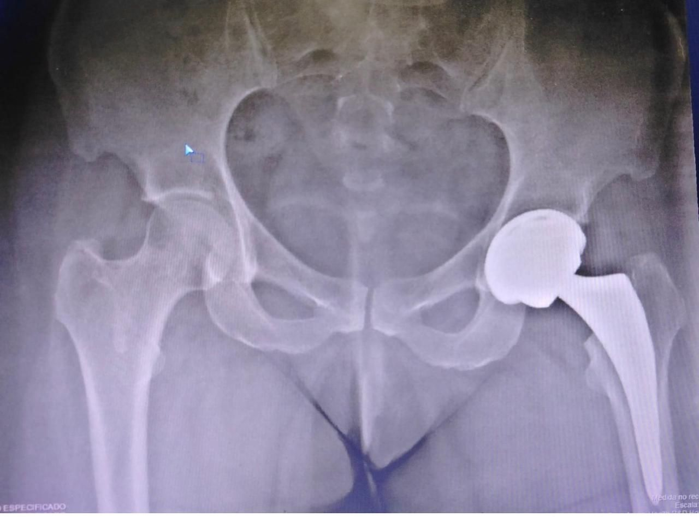
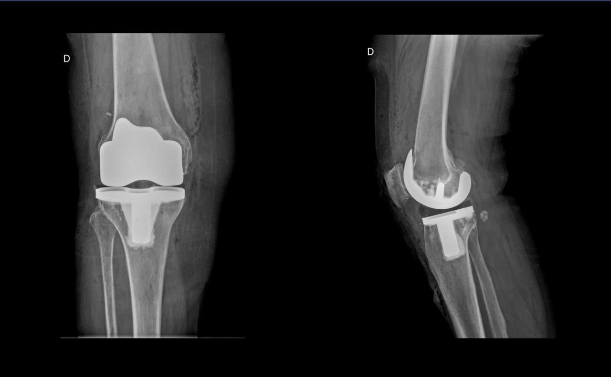
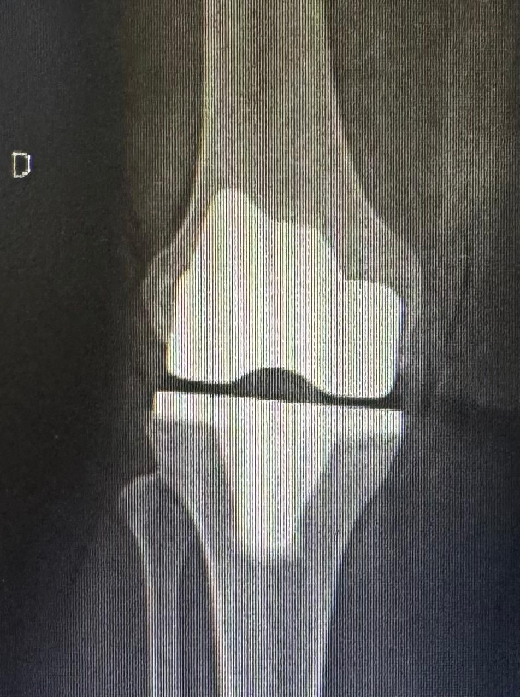
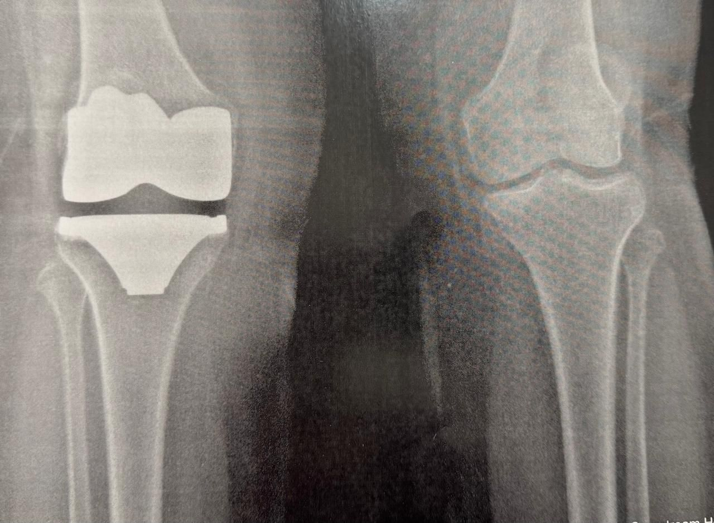
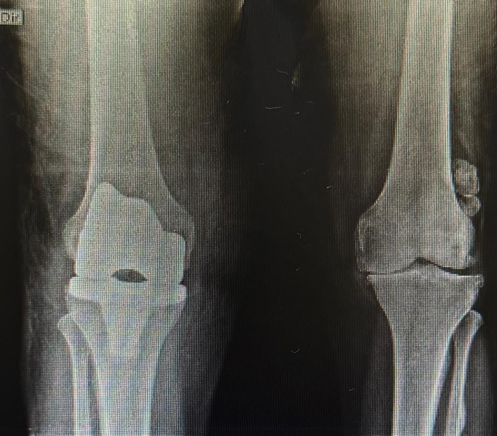
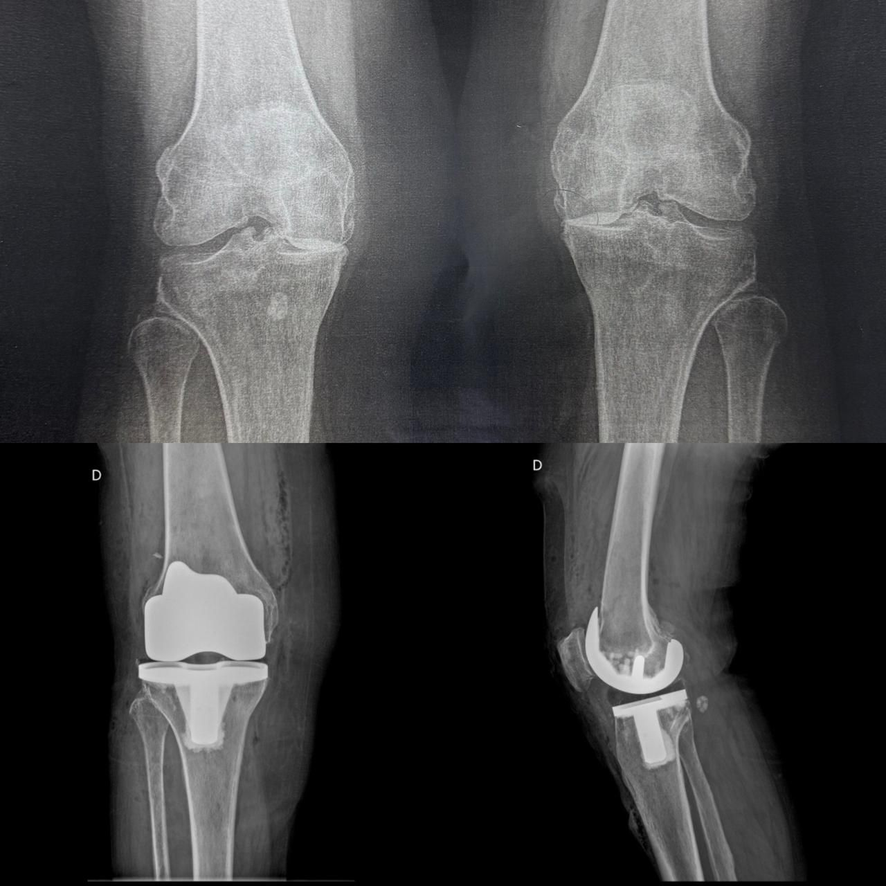
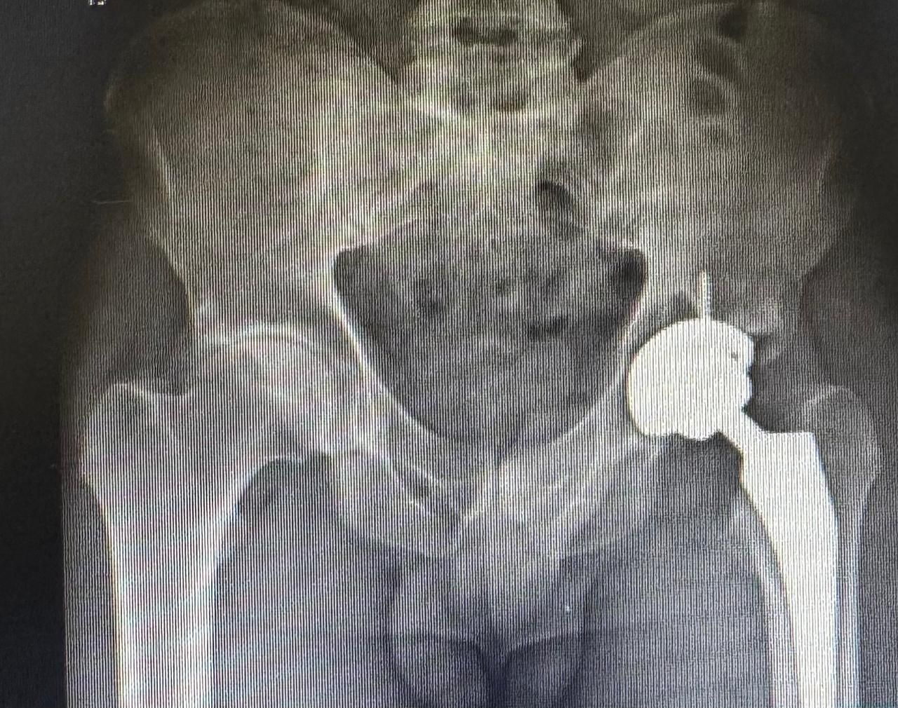
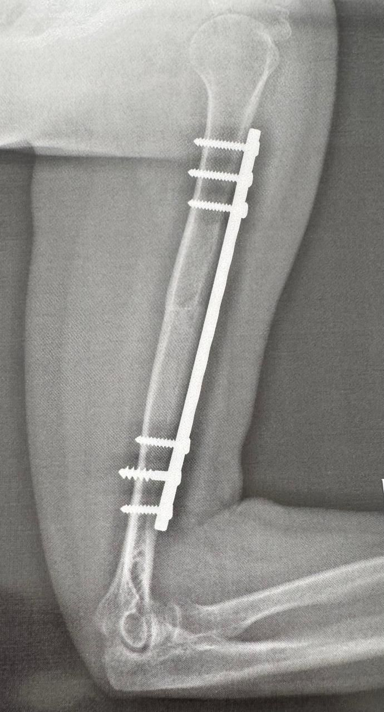
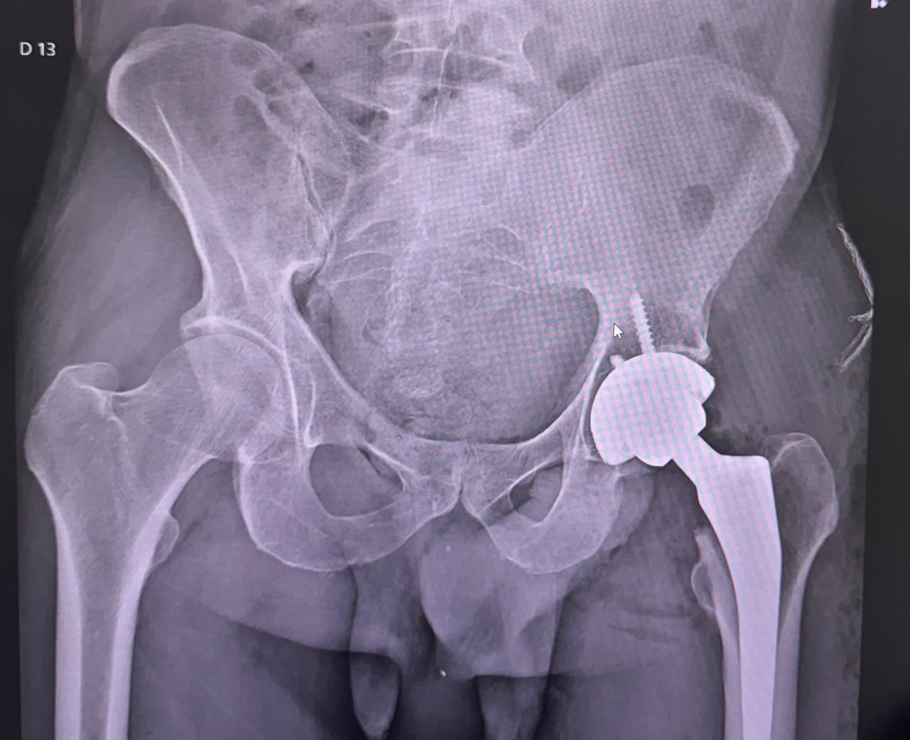

Dr. Rafael Henrique Fernandes Giorgeto
Ortopedista e Traumatologista • Especialista em Próteses de Quadril e Joelho
Olá! Sou o Dr. Rafael Henrique Fernandes Giorgeto, ortopedista e traumatologista. Atendo em consultório particular em São Roque (SP) com foco em devolver sua mobilidade e qualidade de vida, unindo acolhimento, precisão diagnóstica e segurança em cada etapa.
Na consulta detalhada, analiso minuciosamente seu caso para oferecer tratamento individualizado para dor, artrose, artroplastias, infiltrações de coluna, quadril e joelho, prótese de quadril e joelho e trauma ortopédico. Eu e minha equipe estamos prontos para te acompanhar com ética, evidência científica e clareza de custos.
Atendo nos hospitais São Francisco (São Roque e Osasco), São Luiz (Guarulhos e Alphaville) e Lefort Liberdade (São Paulo), e realizo minhas cirurgias nesses hospitais e também no Hospital Evangélico de Sorocaba—estrutura de confiança para quem busca cuidado especializado.
Conjunto Hospitalar do Mandaqui
ESTRUTURA CIRÚRGICA DE ALTA COMPLEXIDADE NOS PRINCIPAIS HOSPITAIS
Especialidades
Atendimento ortopédico especializado com foco na saúde do quadril, joelho, ortopedia geral e cirurgia do trauma.
Prótese de Quadril
Artroplastia total e parcial para dor articular severa, coxartrose, osteonecrose da cabeça femoral e fraturas de quadril com próteses de altíssima durabilidade.
- Alívio completo da dor ao caminhar
- Planejamento pré-operatório digital
Prótese do Joelho
Reconstrução e alinhamento articular para joelhos desgastados por gonartrose, restaurando o alinhamento da perna e permitindo voltar às atividades normais.
- Reabilitação funcional precoce
- Recuperação da estabilidade
Cirurgia do Trauma e Ortopedia
Tratamento especializado em traumatologia ortopédica, acidentes de trabalho, fraturas de membros e autor de publicação científica sobre Fraturas de Planalto Tibial.
- Fixação cirúrgica de fraturas
- Atendimento emergencial e hospitalar
Ortopedia Geral
Avaliação detalhada para dores articulares e tratamento minimamente invasivo via infiltrações guiadas (viscossuplementação) no quadril, joelho e coluna.
- Tratamento conservador de dores
- Procedimentos rápidos em consultório
Doenças Tratadas
Confira a lista completa de doenças e condições tratadas em consultório:
Valores das Consultas e Atendimento
Transparência total nos custos com atendimento de excelência e clareza em todas as etapas.
Consulta Presencial (São Roque)
Atendimento completo na SR Clínica em São Roque (SP) com exame físico minucioso e diagnóstico preciso.
- Consulta dedicada de 45 a 60 minutos
- Avaliação detalhada de Raio-X e Ressonâncias
- Plano individualizado para dor, infiltração ou cirurgia
- Emissão de recibo/laudo para reembolso do convênio
Teleconsulta / Telemedicina
Atendimento online de qualquer lugar do Brasil com laudo e receita digital com assinatura ICP-Brasil.
- Vídeo chamada individualizada com o Dr. Rafael
- Análise remota de exames digitais
- Receitas e pedidos com código QR validado nacionalmente
Atendimento Particular com Reembolso de Convênio Médico
Emitimos nota fiscal e laudo médico detalhado para que você solicite o reembolso integral ou parcial junto ao seu plano de saúde (Bradesco, SulAmérica, Amil, Porto Seguro, Unimed, etc.).
Reconhecimento pela Dedicação e Competência
Avaliações reais extraídas do perfil oficial do Dr. Rafael Giorgeto.
"Gostaria de deixar registrado meu profundo agradecimento ao Dr. Rafael Henrique Fernandes Giorgeto. Um profissional extremamente atencioso, humano e competente. Desde a primeira consulta demonstrou cuidado genuíno, escutando com paciência e explicando cada detalhe com clareza e segurança."
Paciente Doctoralia
"Realizei uma cirurgia com ele, da qual estou me recuperando. Ele está me dando todo um suporte, que está me deixando extremamente seguro. Um ótimo profissional! Transmite confiança e serenidade durante todo o tratamento."
Paciente Cirúrgico
"Passava em outros ortopedistas e nunca resolvia o meu problema. Foi quando eu passei com o Dr. Rafael ele me diagnosticou e achou o meu problema: era hérnia de disco na minha coluna. Sou muito grato a ele!"
Paciente de São Roque
"O melhor médico ortopedista que já passei. Foi certeiro em descrever meu problema e vir com a solução de tratamento e cura. Excelente atendimento, médico calmo e muito responsável."
Paciente Verificado
Galeria de Fotos
Conheça o ambiente de atendimento, procedimentos e momentos da atuação profissional do Dr. Rafael Giorgeto.









Perguntas Frequentes dos Pacientes
O atendimento é particular, mas emitimos a nota fiscal e laudo médico detalhado para que você solicite o reembolso diretamente com seu plano de saúde. A maioria das operadoras (Bradesco, SulAmérica, Amil, Porto Seguro, etc.) reembolsa o valor integral ou grande parte da consulta.
As cirurgias são realizadas em hospitais credenciados de alta complexidade com UTIs modernas e centro cirúrgico de ponta: Hospital São Luiz (Alphaville e Guarulhos), Hospital Lefort Liberdade (São Paulo), Hospital Evangélico de Sorocaba e Hospital São Francisco (São Roque e Osasco).
Traga seus exames de imagem anteriores (Raio-X, Ressonância Magnética, Tomografias), lista de medicamentos em uso contínuo e documento de identificação com foto.
A teleconsulta é feita por videochamada segura. O Dr. Rafael avalia suas queixas, analisa exames digitais que você enviar antes ou durante a chamada e emite receitas ou pedidos de exames com assinatura digital válida em todo o Brasil.
Venha Conhecer Nosso Consultório em São Roque
Ambiente acolhedor e com fácil acesso no centro de São Roque - SP.
Consultório São Roque
SR CLÍNICA
Rua Monsenhor Antônio Pepe, 119
CEP 18134-210 -
São Roque / SP
Telefone / WhatsApp para Agendamento
Instagram Oficial
@dr.rafaelgiorgeto
Confira dicas de saúde articular, vídeos explicativos sobre próteses de quadril e joelho, orientações cirúrgicas e o dia a dia do atendimento ortopédico.
Seguir @dr.rafaelgiorgeto no Instagram